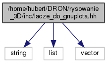

lacze_do_gnuplota.hh File Reference
Zawiera definicję klasy PzG::LaczeDoGNUPlota. More...
#include <string>#include <list>#include <vector>
Include dependency graph for lacze_do_gnuplota.hh:

This graph shows which files directly or indirectly include this file:

Go to the source code of this file.
Classes | |
| class | PzG::InfoPlikuDoRysowania |
| Zestaw informacji dotyczący pliku i sposobu rysowania. More... | |
| class | PzG::LaczeDoGNUPlota |
| Klasa realizuje interfejs do programu GNUPlot. More... | |
Namespaces | |
| PzG | |
| Moduł narzędzi umożliwiających połącznie z GNUPlotem. | |
Enumerations | |
| enum | PzG::TrybRysowania { PzG::TR_2D, PzG::TR_3D } |
Określa tryb rysowania realizowanego przez program gnuplot. More... | |
| enum | PzG::RodzajRysowania { PzG::RR_Ciagly, PzG::RR_Punktowy } |
| Sposób rysowania linii. More... | |
Detailed Description
Zawiera definicję klasy PzG::LaczeDoGNUPlota.
Plik zawiera definicję klasy PzG::LaczeDoGNUPlota realizującej interfejs komunikacyjny do programu gnuplot.
Definition in file lacze_do_gnuplota.hh.